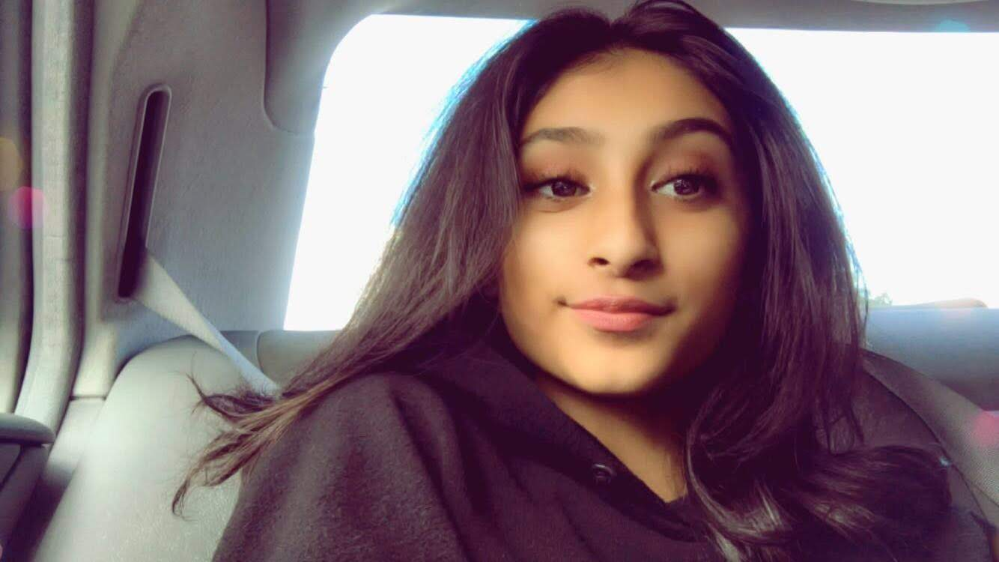
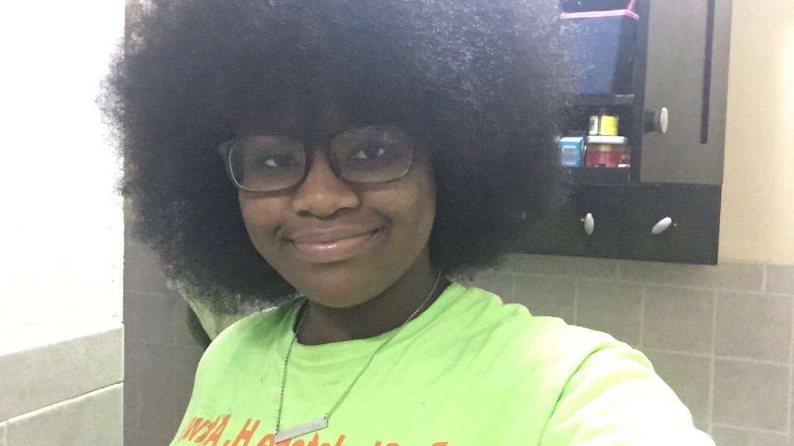
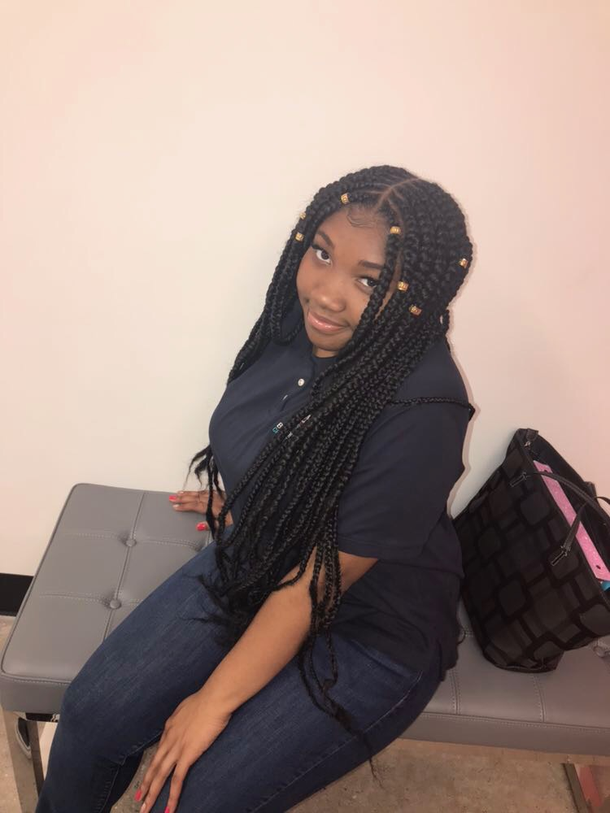

Zoya Khan

About Me:
To start off, i'm 16 years old! I got to Franklin.D.Roosevelt High School and i live in brooklyn. I like to cook and bake and I also love to dance! I am going to be a junior and I am so nervous! I have 2 sisters, One is 18 and starting college and the other is 6 and starting 2nd grade. I'm the middle child so there's that. Some other things I really like to do is makeup and taking pictures and my newest interest is code.Kaylyn Lendor
About Me:
I'm Kaylyn Lendo. I'm 17 years old. I go to Urban Assembly Institute of Math and Science for Young Women. I am a rising senior and I enjoy history class and writing.Elizabeth Casimir

About Me:
My name Elizabeth Casimir, I helped create this website. I’m currently 15, I attend the high school Academy for Young Writers and I’m going into my junior year. I enjoy playing badminton and sleeping. I’ve recently taken an interest in computer science and I’m excited to learn more about it. I spend a lot of time on my social media and catching up on the latest news. I love to try new hairstyles and watching hair and skincare videos.
About Me:
I'm Janiya Caple, I'm 17 years old. I go to brooklyn lab charter School. I am a rising junior, and I enjoy history class and writing.